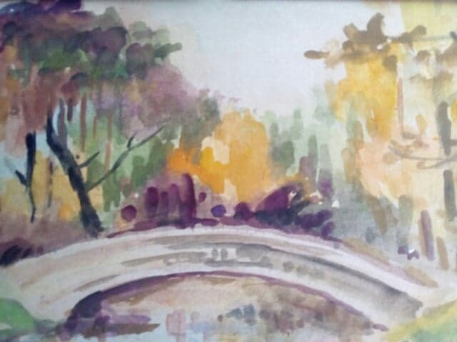
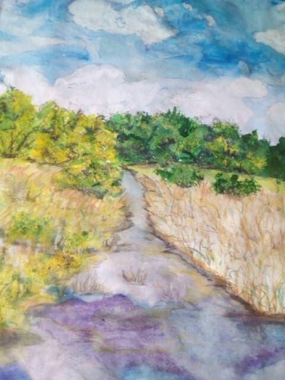
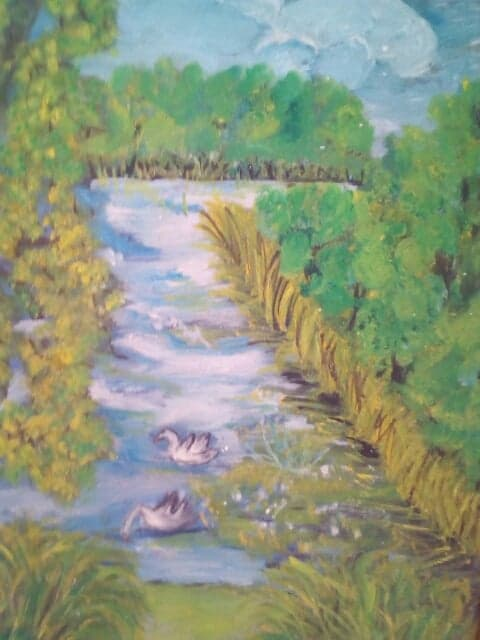

Farby akrylowe, które pozwolalają na uzyskanie nieskończonej ilości efektów i struktur.
Wymaga oczywiście stosowania werniksów.
Farby Olejne
Farby olejne przeznaczone do malowania na płótnie, kartonie i innych, odpowiednio zagruntowanych powierzchniach.
Farby Akwarelowe
Malarstwo akwarelowe jest jedną z najstarszych technik malarskich.
Jest to stosunkowo trudna technika, ponieważ nie daje prawie żadnej możliwości dokonywania poprawek i retuszy.



Bogactwo i różnorodność farb umożliwia tworzenie wielobarwnych oraz niepowtarzalnych kompozycji.